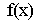
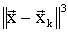
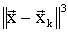
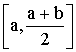

рассмотрим вектор-функцию (в дальнейшем просто функцию). Пусть В - некоторый шар в :
рассмотрим вектор-функцию (в дальнейшем просто функцию). Пусть В - некоторый шар в :В настоящем разделе будут рассмотрены простейшие итерационные методы решения уравнений и систем уравнений вида
| (1) |
Задача нахождения корней уравнения (1) обычно решается в два этапа. На первом этапе, искомый корень локализуется, т.е. определяется некоторое множество, в котором заведомо находится интересующий нас корень и нет других корней уравнения (1). Затем, на втором этапе, по выбранному в этом множестве начальному приближению, на основе того или иного итерационного метода, строится последовательность, сходящаяся к искомому решению. Вначале мы обсудим итерационные методы и их свойства, затем - приведем некоторые утверждения, обычно используемые для локализации корней. В качестве приложения вышеописанной методики будет рассмотрена задача о построении адаптивных сеток.
Сжимающие функции. В пространстве рассмотрим вектор-функцию (в дальнейшем просто функцию). Пусть В - некоторый шар в :
где - одна из норм семейства II.(1) (индекс “p” в обозначении нормы мы опускаем). Будем считать, что функция G определена в шаре B.
Определение 1. Функция называется сжимающей на В, если:
 выполнено неравенство:
выполнено неравенство:

Теорема
1 (о сжимающей функции). Пусть В - шар в  , G - сжимающая на В функция. В этом случае справедливы утверждения:
, G - сжимающая на В функция. В этом случае справедливы утверждения:
 - называется неподвижной точкой функции G;
- называется неподвижной точкой функции G;
| (2) |
Скорость сходимости последовательности характеризуется неравенствами:
| (3) |
| (4) |
Доказательство
. Вначале докажем сходимость последовательности  , построенной по формуле (2). Пусть m>k, в силу Определения 1, получим цепочку неравенств:
, построенной по формуле (2). Пусть m>k, в силу Определения 1, получим цепочку неравенств:
| (5) |
Устремляя «k» и «m» к бесконечности, в силу (5), приходим к выводу о том, что последовательность сходится. В силу полноты пространства , существует точка , такая, что . Кроме того, т.к. G –сжимающая, то при k=1,2,…, значит и , в силу замкнутости B.
Покажем, что неподвижная точка функции G. Действительно, имеем оценку:
из которой, и доказанного выше, следует:
С другой стороны,
что и требовалось доказать.
Докажем единственность неподвижной точки функции G. Пусть это не так, то есть: и . В силу Определения 1:
и, так как то , а значит Единственность доказана.
Для доказательства оценки (3) достаточно устремить к бесконечности величину “m” в левой части неравенства (5), оставляя при этом “k” неизменным. Неравенство (4) доказывается следующим образом:
Теорема полностью доказана
Метод простой итерации. Для первоначального изучения итерационных методов ограничимся случаем одного уравнения вида (1). Все рассмотренные в дальнейшем методы являются конкретными реализациями следующего итерационного процесса, который состоит в отыскании последовательности , определяемой формулой:
| (6) |
при заданной величине x0. В частности, если определены функции а(x) и b(x), а величины ak и bk вычисляются по формулам:
то итерационный процесс (6) будем называть методом простой итерации. В этом случае итерационный процесс (6) можно записать в виде (2):
где
и для его изучения воспользоваться Теоремой 1. Метод простой итерации относится к одношаговым итерационным методам, так как для его реализации необходима информация с одного (предыдущего) итерационного шага.
Важными свойствами итерационного процесса являются корректность и сходимость. Так, метод (6) будем считать корректным, если выполнены условия:
этот же метод будем называть сходящимся, если
для некоторого корня  уравнения
(1). Введем еще несколько понятий.
уравнения
(1). Введем еще несколько понятий.
Определение
2. Пусть  - корень уравнения
(1). Областью притяжения корня
для итерационного процесса
(6) называется множество начальных приближений xo, при которых
. Это же множество называется областью сходимости итерационного процесса (6) к корню
- корень уравнения
(1). Областью притяжения корня
для итерационного процесса
(6) называется множество начальных приближений xo, при которых
. Это же множество называется областью сходимости итерационного процесса (6) к корню
Определение
3. Корень называется притягивающим (для итерационного процесса
(6)), если его область притяжения содержит точки, отличные от
. В противном случае - корень называется отталкивающим.
Критерием остановки сходящегося итерационного процесса обычно считают выполнение одного из следующих неравенств:

здесь - наперед заданное положительное число, определяющее точность, с которой хотят вычислить корень уравнения (1).
Рассмотрим вариант метода простой итерации, который получается, если в
(6) положить 
| (7) |
Некоторые свойства метода (7) содержатся в следующем утверждении.
Теорема
2. Пусть корень уравнения
(1). Предположим, что найдется такое r>0, что
и не меняет знак на отрезке
Если «a» имеет тот же знак, что и , и кроме того, удовлетворяет неравенству
то для любого метод простой итерации (7) сходится к корню
 , при этом справедлива оценка:
, при этом справедлива оценка:

где
| (8) |
Доказательство . Покажем, что функция
является сжимающей с коэффициентом сжатия «q», удовлетворяющим условию (8). Тогда наша теорема окажется прямым следствием Теоремы 1. Действительно, в силу теоремы о среднем (см. [1]), для любых и некоторого , лежащего между x и y, имеем неравенство:
Далее, для любого  неравенство
неравенство
эквивалентно двум условиям:
а значит q<1, в силу условий теоремы. Таким образом, пункт 2) Определения 1 проверен. Пусть ; в силу все той же теоремы о среднем,
Поэтому:
служит проверкой пункта 1) Определения 1 и доказывает теорему
Предположим, что функция  удовлетворяет условиям Теоремы 2, и
определяется левой частью соотношения
(8). Поставим следующую задачу: найти такое
которое доставляет минимум функции
 . Очевидно, что в этом случае итерационный процесс
(7) будет обладать наиболее быстрой сходимостью. Для решения этой задачи, предположим известными величины
. Очевидно, что в этом случае итерационный процесс
(7) будет обладать наиболее быстрой сходимостью. Для решения этой задачи, предположим известными величины
Анализируя графики соответствующих функций, заметим, что:
Нетрудно показать, что минимум функция достигает для «a», удовлетворяющих соотношению
Решая последнее уравнение, находим:
для коэффициента сжатия q в этом случае справедливо представление:
Задача
1. Для метода простой итерации
(7) найти области притяжения (см. Определение 2) всех корней уравнений:
Дать классификацию всех корней в соответствии с Определением 3
Метод Ньютона и его модификации. Для построения метода воспользуемся следующими формальными рассуждениями. Пусть
корень уравнения
(1), в котором функцию f(x) будем считать достаточно гладкой. Предположим, что найдена некоторая достаточно близкая к корню
 точка
. По формуле Тейлора с остаточным членом в форме Пеано
[1], получим:
точка
. По формуле Тейлора с остаточным членом в форме Пеано
[1], получим:
| (9) |
Считая величину  достаточно малой, отбросим последнее слагаемое в (9). Оставшееся соотношение будет определять не
достаточно малой, отбросим последнее слагаемое в (9). Оставшееся соотношение будет определять не
 , а некую величину
, которую мы и примем за новое приближение к
, а некую величину
, которую мы и примем за новое приближение к  :
:
При условии последнее соотношение приводит нас к формулам метода Ньютона:
| (10) |
Заметим, что метод Ньютона (10) является частным случаем (при
) итерационного процесса
(6); более того, он является вариантом метода простой итерации (для
 ), поэтому, для исследования сходимости метода Ньютона можно попытаться использовать Теорему 1. Действительно, полагая:
), поэтому, для исследования сходимости метода Ньютона можно попытаться использовать Теорему 1. Действительно, полагая:
запишем метод (10) в форме (2). Исследуя сжимающие свойства функции g(x), воспользуемся неравенством:
где некоторая окрестность корня
 уравнения
(1). Так как
уравнения
(1). Так как
то Поэтому, если функция непрерывна в некоторой окрестности точки то найдется такое , что Далее, неравенство
позволяет сделать вывод о том, что функция g(x) множество В переводит в него же. После проведенных рассуждений следующее утверждение является следствием Теоремы 1.
Теорема
3. Пусть  - простой корень уравнения
(1). Если функция f(x) имеет две непрерывные производные в некоторой окрестности точки
- простой корень уравнения
(1). Если функция f(x) имеет две непрерывные производные в некоторой окрестности точки
 , то найдется такое
что для любого начального приближения
, то найдется такое
что для любого начального приближения
 итерационный процесс
(10) сходится к корню
и справедлива оценка:
итерационный процесс
(10) сходится к корню
и справедлива оценка:
где
Оценки Теорем 2 и 3, так же, как и оценки (3), (4) для метода простой итерации, гарантируют линейную сходимость со скоростью геометрической прогрессии. На самом деле, метод Ньютона гарантирует большую скорость сходимости: квадратичную, что и будет доказано в следующем утверждении.
Теорема
4. Пусть  - корень уравнения
(1). Предположим, что найдется такое r>0, что
и для любого
выполнены неравенства:
- корень уравнения
(1). Предположим, что найдется такое r>0, что
и для любого
выполнены неравенства:
Положим:
тогда для любого метод Ньютона (10) сходится и имеет место оценка:
где
Доказательство . Используя формулу Тейлора с остаточным членом в форме Пеано, получим:
В силу формул метода Ньютона (10):
Складывая эти соотношения, после некоторых преобразований, имеем:
| (11) |
Если то и поэтому, в силу (11) и условий теоремы, получим неравенство:
| (12) |
Значит, таким образом, если то и для любого , и мы можем рекуррентно разрешить неравенство (12):
Требуемая оценка доказана. Так как , то , и итерационный процесс Ньютона
(10) сходится
Итак, в силу Теоремы 4, метод Ньютона (10) сходится быстрее, чем метод простой итерации (7), говорят, что он обладает суперлинейной сходимостью. Однако, чтобы реализовать эту суперсходимость метода Ньютона, начальное приближение должно быть выбрано достаточно близко к корню - это также следствие Теоремы 4. Проиллюстрируем этот вывод на следующем примере.
Пример
1. Рассмотрим уравнение 3) Задачи 1 и определим область сходимости метода Ньютона к единственному корню
 этого уравнения. Так как в этом случае
этого уравнения. Так как в этом случае
то метод Ньютона (10) порождает последовательность xk, которая определяется формулой:
из этой формулы следует, что для сходимости последовательности xk к решению необходимо обеспечить выполнение условия:
Последнее условие, как правило, неприемлемо, если - достаточно мало
Известна модификация метода Ньютона, которая позволяет в случаях, подобных рассмотренному в Примере 1, расширить область сходимости. Этот метод может быть получен путем введения в формулы (10) демпфирующего параметра tk:
| (13) |
Очевидно, что метод Ньютона с демпфирующим параметром (13) также является частным случаем итерационного процесса (6).
Пример 2. Рассмотрим уравнение 3) Задачи 1 и покажем, что, выбирая специальным образом параметры в (13), можно добиться расширения области сходимости метода Ньютона до всей числовой оси R. В этом случае формулы (13) имеют вид:
| (14) |
и для сходимости итерационного процесса (14) достаточно  выбирать удовлетворяющими неравенству:
выбирать удовлетворяющими неравенству:
Чтобы сохранить суперлинейную сходимость метода Ньютона, выбор демпфирующих параметров целесообразно осуществлять следующим образом:
Продолжим рассмотрение различных вариантов метода Ньютона. Если точка  достаточно близка к корню уравнения
достаточно близка к корню уравнения
 , то ввиду близости производных
и
, то ввиду близости производных
и  итерации можно проводить по формуле:
итерации можно проводить по формуле:
| (15) |
сэкономив при этом время счета, поскольку нет необходимости вычислять величины , но проиграв в скорости сходимости. Итерационный метод (15) носит название модифицированного метода Ньютона, он, очевидно (при ) является частным случаем метода простой итерации (7).
Если вычисление производных от функции  по тем, или иным причинам, невозможно, то эти производные в методе Ньютона
(10) могут быть с успехом заменены аппроксимирующими их разностными соотношениями:
по тем, или иным причинам, невозможно, то эти производные в методе Ньютона
(10) могут быть с успехом заменены аппроксимирующими их разностными соотношениями:
В результате приходим к так называемому методу секущих (вариант I):
 |
(16) |
который относится к двух-шаговым методам и уже не может трактоваться как метод простой итерации. Тем не менее, он будет частным случаем итерационного процесса (6), если положить:
и сделать оговорку о том, что в этом случае задаются два начальных значения x0 и x1.
Модифицированный метод Ньютона
(15) также может быть упрощен после замены  разностным приближением:
разностным приближением:
В итоге получим второй вариант метода секущих:
| (17) |
который, с той же оговоркой, что и (16), можно рассматривать как частный случай (6) при
и даже как вариант метода простой итерации.
Задача
2. Для метода Ньютона
(10) найти области притяжения (см. Определение 2) всех корней уравнений 1)-4) из Задачи 1. Дать классификацию этих корней в соответствии с определением 3
Метод Хэлли. Этот метод менее известен, чем метод Ньютона: он требует больше вычислений, однако, во многих ситуациях, метод Хэлли гораздо эффективнее. Впервые эта методика была предложена, по-видимому, в работе [2] и исследована в работах [3,4]. Изложим рассуждения, позволяющие прийти к методу Хэлли. Пусть
корень уравнения
(1) и функция
 обладает достаточной гладкостью в некоторой окрестности этого корня. Предположим, что найдена некоторая достаточно близкая к
обладает достаточной гладкостью в некоторой окрестности этого корня. Предположим, что найдена некоторая достаточно близкая к
 точка
точка
 . Для функции
. Для функции
 рассмотрим следующее рациональное представление:
рассмотрим следующее рациональное представление:
| (18) |
Выберем и так, чтобы величина из (18) имела порядок По формуле Тейлора:
| (19) |
сравнивая две формулы (18) и (19), найдем :
Желаемого результата достигнем, положив:
| (20) |
при условии, что Из (18) и (20), получим:
| (21) |
Считая величину достаточно малой, отбросим последнее слагаемое в (21). Оставшееся соотношение будет определять не
 , а некую величину
которую мы и примем за новое приближение к корню
, а некую величину
которую мы и примем за новое приближение к корню
 :
:
Разрешая последнее соотношение относительно  , приходим к формулам метода Хэлли:
, приходим к формулам метода Хэлли:
| (22) |
Метод Хэлли может быть получен в рамках итерационного процесса (6), если положить:
и является одним из вариантов метода простой итерации (2). Действительно, достаточно положить:
Некоторые выводы о сходимости метода Хэлли можно сделать, используя Теорему 1. Действительно, практически повторяя рассуждения, приведенные в доказательстве Теоремы 3 для метода Ньютона и представление:
убеждаемся в справедливости следующего утверждения.
Теорема
5. Пусть  - простой корень уравнения
(1). Если функция имеет три непрерывные производные в некоторой окрестности
, то найдется такое r>0, что для любого начального приближения
итерационный процесс
(22) сходится к
- простой корень уравнения
(1). Если функция имеет три непрерывные производные в некоторой окрестности
, то найдется такое r>0, что для любого начального приближения
итерационный процесс
(22) сходится к
 и справедлива оценка:
и справедлива оценка:
 ,
,где
На самом деле, скорость сходимости метода Хэлли гораздо выше, чем та, что декларируется Теоремой 5. Мы не будем обсуждать эти вопросы в общей форме, остановимся лишь на простом примере.
Пример 3. Рассмотрим уравнение
| (23) |
частный случай которого мы рассматривали в Примерах 1 и 2, и выясним для него область сходимости метода Хэлли. Легко проверить, что:
где
Таким образом, метод (22) приводит в рассматриваемом случае к следующим формулам:
| (24) |
Решение уравнения
(23), в свою очередь, существует тогда и только тогда, когда  и это решение имеет вид:
и это решение имеет вид:
Очевидно, что решение уравнения (23) может быть найдено при помощи формулы (24) не более, чем за два итерационных шага, вне зависимости от того, где выбирается начальное приближение
. Напомним, что, как было показано в Примере 1, метод Ньютона для этого же уравнения (только при
) имеет довольно “узкую” область сходимости
Если значения производных, входящих в формулу (22), вычислять затруднительно, то они могут быть аппроксимированы разностными соотношениями:
В этом случае итерационный процесс оказывается трех-шаговым и требует задания начальных значений . Очевидно, что при соответствующем определении параметров
 , этот модифицированный метод Хэлли является частным случаем итерационного процесса
(6).
, этот модифицированный метод Хэлли является частным случаем итерационного процесса
(6).
Задача
3. Для метода Хэлли
(22) найти области притяжения (см. Определение 2) всех корней уравнений 1)-4) из Задачи 1. Дать классификацию этих корней в соответствии с Определением 3
Геометрическая интерпретация итерационного процесса (6). Как следует из предыдущих рассмотрений, все методы, о которых шла речь, являются конкретными реализациями итерационного процесса (6), поэтому, говоря о геометрической интерпретации, обратимся к этим формулам. В плоскости переменных рассмотрим прямую:
| (25) |
где
 - найденное на k-ом шаге итерационного процесса
(6) приближение к корню
уравнения
(1). Прямая (25) проходит через точку с координатами
- найденное на k-ом шаге итерационного процесса
(6) приближение к корню
уравнения
(1). Прямая (25) проходит через точку с координатами
 и пересекает ось
в точке
- новом итерационном приближении, которое и определяется формулой (6). Выбор конкретного метода равносилен выбору углового коэффициента
для прямой (25). Так, в случае метода простой итерации
(7):
, и его реализация порождает семейство параллельных прямых (25). Для метода Ньютона
(10)
, и прямые (25) являются касательными к графику
функции
и пересекает ось
в точке
- новом итерационном приближении, которое и определяется формулой (6). Выбор конкретного метода равносилен выбору углового коэффициента
для прямой (25). Так, в случае метода простой итерации
(7):
, и его реализация порождает семейство параллельных прямых (25). Для метода Ньютона
(10)
, и прямые (25) являются касательными к графику
функции
 в точках
. Поэтому метод Ньютона иногда называют методом касательных. Первый вариант метода секущих
(16) приводит к прямым (25), пересекающим график функции
в точках
. Поэтому метод Ньютона иногда называют методом касательных. Первый вариант метода секущих
(16) приводит к прямым (25), пересекающим график функции
 в двух точках:
и ; что легко проверить, так как в этом случае
в двух точках:
и ; что легко проверить, так как в этом случае
Этот факт и объясняет название метода. Второй вариант метода секущих
(17) порождает пучок прямых, пересекающихся в одной точке
и проходящих через точки
графика функции
 . Геометрическая интерпретация позволяет наглядно проиллюстрировать работу каждого метода.
. Геометрическая интерпретация позволяет наглядно проиллюстрировать работу каждого метода.
Итерационные методы для систем нелинейных уравнений. Обобщим некоторые, из рассмотренных выше методов, на случай системы уравнений:
| (26) |
где - функции переменных Обозначим:
и запишем систему (26) в векторной форме:
| (27) |
Аналог итерационного процесса (6) для векторного уравнения (27) можно сформулировать в следующем операторном виде:
| (28) |
где: k - номер итерации;
 - k-ое итерационное приближение к корню
уравнения (27); Ak - линейный, Вк - билинейный операторы, действующие в пространстве Rm. Необходимым условием корректности итерационного процесса (28) является обратимость на каждом итерационном шаге линейного оператора (матрицы)
- k-ое итерационное приближение к корню
уравнения (27); Ak - линейный, Вк - билинейный операторы, действующие в пространстве Rm. Необходимым условием корректности итерационного процесса (28) является обратимость на каждом итерационном шаге линейного оператора (матрицы)
Многомерный аналог метода простой итерации
(7) получим, если положим в (28):
, где А - некоторая обратимая
-матрица. Метод Ньютона для решения системы (27) также может быть получен из формул (28), если
и , где
- сильная производная (производная Фреше) вектор-функции
 в точке
в точке
 (см. [5]). Для реализации метода Ньютона необходимо существование матриц
обратных к
По поводу сходимости метода Ньютона для систем уравнений можно сказать то же, что и в случае одного уравнения, а именно: метод имеет квадратичную сходимость, если начальное приближение выбрано достаточно близко к корню. Легко обобщаются на случай системы уравнений метод Ньютона с демпфирующим параметром
(13) и модифицированный метод Ньютона
(15): в первом случае нужно положить в
(28)
(см. [5]). Для реализации метода Ньютона необходимо существование матриц
обратных к
По поводу сходимости метода Ньютона для систем уравнений можно сказать то же, что и в случае одного уравнения, а именно: метод имеет квадратичную сходимость, если начальное приближение выбрано достаточно близко к корню. Легко обобщаются на случай системы уравнений метод Ньютона с демпфирующим параметром
(13) и модифицированный метод Ньютона
(15): в первом случае нужно положить в
(28)
а во втором:
Остановимся подробнее на построении многомерного варианта метода Хэлли. Предположим, что найдено некоторое итерационное приближение xk. Так же, как и в случае обыкновенной функции, рассмотрим следующее представление для вектор-функции :
| (29) |
В (29): А - линейный, В - билинейный операторы, действующие в простран-стве Rm; эти операторы требуется определить так, чтобы погрешность
 имела порядок
 для достаточно близких
имела порядок
 для достаточно близких
 и Предположим, что
и Предположим, что
 имеет непрерывные частные производные до третьего порядка включительно, и воспользуемся формулой Тейлора для вектор - функции (см.[5]):
имеет непрерывные частные производные до третьего порядка включительно, и воспользуемся формулой Тейлора для вектор - функции (см.[5]):
| (30) |
Здесь  - линейный, а
- билинейный операторы в
(их определение см. в [5]). Сравнивая формулы (29) и (30), приходим к выводу, что желаемого результата мы достигнем, если операторы A и B будут удовлетворять соотношениям:
- линейный, а
- билинейный операторы в
(их определение см. в [5]). Сравнивая формулы (29) и (30), приходим к выводу, что желаемого результата мы достигнем, если операторы A и B будут удовлетворять соотношениям:
| (31) |
Из формулы (31), конечно, достаточно сложно сделать вывод о том, каким должен быть оператор В; но, как будет видно из следующих рассуждений, точный вид В нам и не потребуется. Действительно, пусть - решение уравнения (27), подставляя в (29) и, учитывая формулы (31), приходим к выводу о том, что новое приближение можно найти из следующего уравнения:
| (32) |
Таким образом, в силу (32), достаточно знать матрицу ; рассмотрим следующий способ ее вычисления. Пусть - решение уравнения:
| (33) |
Тогда, в соответствии с (33) и (31):
В силу выше приведенных рассуждений, метод Хэлли для многомерного случая можно представить в виде следующего двухступенчатого процесса:
 вычисляем величину , решая уравнение (33);
вычисляем величину , решая уравнение (33);
 и
и  , вычисляем , решая уравнение:
, вычисляем , решая уравнение:
Таким образом, в изложенной интерпретации, метод Хэлли выглядит как уточнение метода Ньютона.
В заключение отметим, что вопросы сходимости итерационных процессов вида (28) могут быть, в первом приближении, изучены при помощи Теоремы 1, как это было сделано для случая одного уравнения.
О локализации корней. Сходимость всех рассмотренных методов, вообще говоря, имеет локальный характер: ее можно гарантировать, если начальное приближение выбрано достаточно близко к искомому корню. Об этом говорят и результаты Теорем 1-5, доказанных в настоящем разделе. Задача локализации корней нелинейных уравнений или, что то же, задача определения их областей притяжения, в общем случае является задачей трансцендентной сложности. Обсудим простейшие методы, которые могут быть использованы для локализации корней.
Наиболее простым и надежным методом локализации простого действительного корня
 уравнения
(1) с непрерывной функцией
уравнения
(1) с непрерывной функцией
 является метод деления отрезка пополам (метод бисекции), если на отрезке (a,b) расположен только такой корень, что
и имеют различные знаки. Пусть, для определенности,
Положим
и вычислим
. Если
то
в противном случае:
Далее, из двух интервалов
является метод деления отрезка пополам (метод бисекции), если на отрезке (a,b) расположен только такой корень, что
и имеют различные знаки. Пусть, для определенности,
Положим
и вычислим
. Если
то
в противном случае:
Далее, из двух интервалов
 и
и  выбираем тот, на границах которого функция
выбираем тот, на границах которого функция
 имеет различные знаки, находим точку
- середину выбранного интервала, вычисляем
и повторяем указанный процесс. В результате получаем последовательность интервалов, содержащих искомый корень
имеет различные знаки, находим точку
- середину выбранного интервала, вычисляем
и повторяем указанный процесс. В результате получаем последовательность интервалов, содержащих искомый корень
 , причем длина каждого последующего интервала вдвое меньше, чем предыдущего. Процесс заканчивается, когда длина вновь построенного интервала станет меньше заданного числа
. Этот метод можно использовать для вычисления корня с заданной точностью
. Однако, ввиду его медленной сходимости, целесообразно, после того как корень хорошо локализован, применять какой-либо из рассмотренных выше итерационных методов.
, причем длина каждого последующего интервала вдвое меньше, чем предыдущего. Процесс заканчивается, когда длина вновь построенного интервала станет меньше заданного числа
. Этот метод можно использовать для вычисления корня с заданной точностью
. Однако, ввиду его медленной сходимости, целесообразно, после того как корень хорошо локализован, применять какой-либо из рассмотренных выше итерационных методов.
Приведем условия разрешимости уравнения (1), имеющие нелокальный характер.
Теорема 6. Допустим, что и для любого и некоторого c>0. Если
то на отрезке [a,b] уравнение имеет хотя бы одно решение.
Доказательство . В силу условий теоремы, не меняет знака на отрезке Предположим, что , тогда .
Если , то, используя теорему о среднем, получим:
Значит, корень лежит на отрезке .
Если , то, аналогично:
и корень должен находится на отрезке . Теорема доказана
Рассмотрим случай, когда функция  в уравнении
(1) является многочленом. Проблему локализации корней многочлена позволяет решать теорема Штурма, известная из курса высшей алгебры [6].
в уравнении
(1) является многочленом. Проблему локализации корней многочлена позволяет решать теорема Штурма, известная из курса высшей алгебры [6].
Определение 4. Пусть - многочлен с действительными коэффициентами, не имеющий кратных корней. Система многочленов называется системой Штурма для многочлена p(x), если она построена по следующему правилу:
- остаток от деления на ; если - построены, то - остаток от деления ;
Пусть и . В последовательности

вычеркнем все числа, равные нулю и обозначим; - число перемен знака в оставшейся последовательности.
Теорема
7 (Штурма). Если и не являются корнями многочлена
, то величина W(a)-W(b) равна числу вещественных нулей многочлена p(x), заключенных между a и b
Доказательство Теоремы можно найти, например, в [6].
Фихтенгольц Г.М. Курс дифференциального и интегрального исчисления, том I. Москва «Наука», 1970, -800 с.
 |